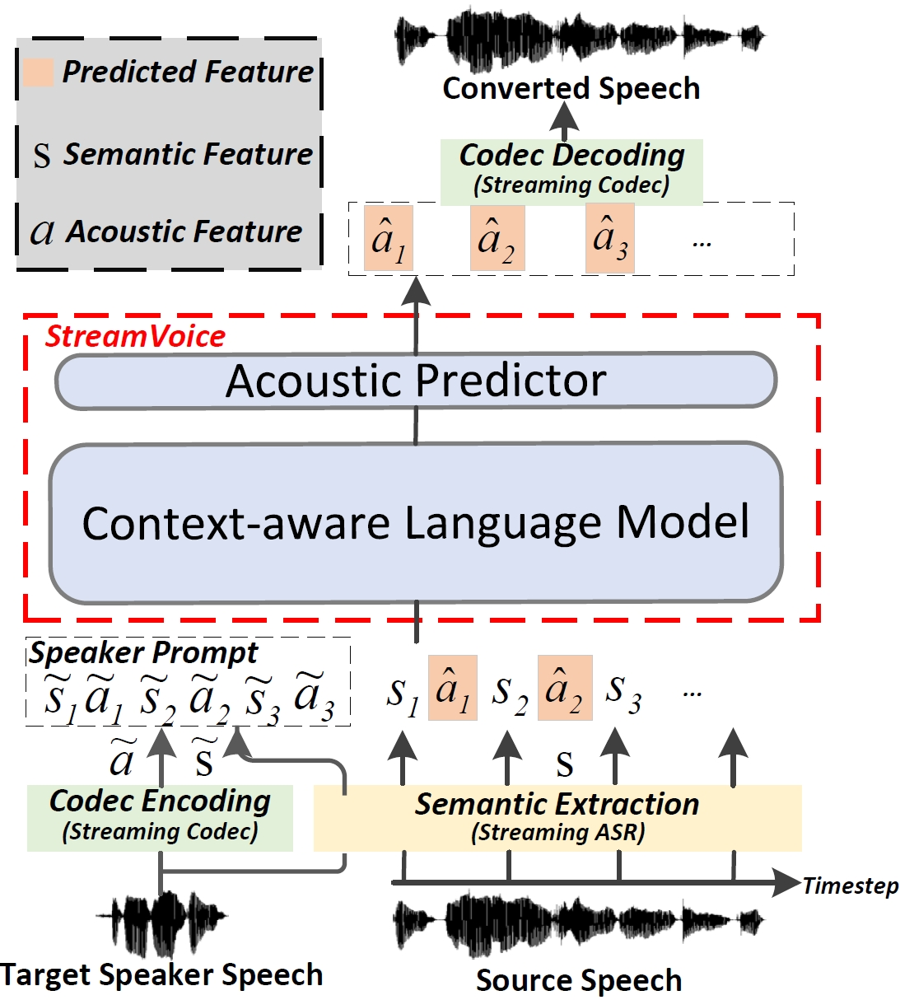

Recent language model (LM) advancements have showcased impressive zero-shot voice conversion (VC) performance. However, existing LM-based VC models usually apply offline conversion from source semantics to acoustic features, demanding the complete source speech, and limiting their deployment to real-time applications. In this paper, we introduce StreamVoice, a novel streaming LM-based model for zero-shot VC, facilitating real-time conversion given arbitrary speaker prompts and source speech. Specifically, to enable streaming capability, StreamVoice employs a fully causal context-aware LM with a temporal-independent acoustic predictor, while alternately processing semantic and acoustic features at each time step of autoregression, which eliminates the dependence on complete source speech. To address the potential performance degradation from the incomplete context in streaming processing, we enhance the context-awareness of the LM through two strategies: 1) teacher-guided context foresight, using a teacher model to summarize the present and future semantic context during training to guide the model's forecasting for missing context; 2) semantic masking strategy, promoting acoustic prediction from preceding corrupted semantic and acoustic input, enhancing context-learning ability. Notably, StreamVoice is the first LM-based streaming zero-shot VC model without any future look-ahead. Experimental results demonstrate StreamVoice's streaming conversion capability while maintaining zero-shot performance comparable to non-streaming VC systems.

Demo: Zero-shot Results
Zero-shot VC demos for speakers collected from the speech corpus and internet.